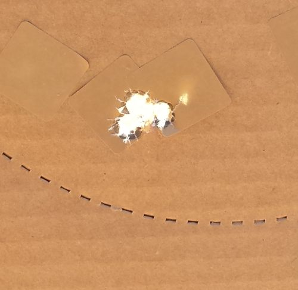

I started my day with a snow covered car. And a commitment to pick up a holster and 3 mag pouches from the local guy (D&D Holsters) I bought them from last year. My house was burglarized last fall, most of my shooting gear was stolen and I was in the process of rebuilding. This was the last bit of equipment I needed to shoot my next match. The forecast predicted that the snow wouldn’t stick and my holster would be ready for pickup at noon, so I took a broom to the car to remove the snow and I headed north to The Range in Oxford.
{kind=link}
I had no intention of shooting a match. Really. There was snow on the ground! I think the last match I shot was back in May of 2016. I needed to practice with the new gun and the new holsters. I wasn’t sure I even remembered how to do a reload on the clock.
But an hour later I arrived and the weather had turned beautiful. It was 50 degrees and warm in the sun. I ran into friends I hadn’t seen in months. Everyone of them encouraged me to shoot. The holster I picked up fit the gun with a minor adjustment and the mag pouches were perfect with no adjustment.
I was short on ammo since I was sure it would be much too cold for to shoot. A friend filled that gap and said he’d give me what I needed if I ran short.
- Was I ready to compete? No.
- Was all my gear the way I wanted it it? No.
- Was my gear sufficient? Yes.
- Could I be safe? Yes.
I sighed up and shot the match. I was a good decision. Thanks to everyone who badgered me into it!
I had chosen a down vest that morning due to the cold so this was my first match using a down vest as a cover garment. It worked fine.
I remembered what I liked best about shooting a match: spending time with friends. I’m not competitive. I always place near the bottom of the list. But I really enjoy the sport and I’m a safe.shooter. They asked me to help out with scoring so I pitched in and did that as well. Once the match was over I checked in with the guys who were running the timer to get feedback on how we worked together. I’m glad I did. I’ll be able to do the job better when I’m asked again.
The timer keeper is responsible for ensuring no one wanders into the line of fire as well as recording the time, the points down and any penalties. I was focused on the scoring part of that list. I was aware of where the rest of the squad was subconsciously but I’ll be looking more actively to keep other shooters safe if/when asked to help again.
We shot moving targets, we moved and shot stationary targets, we shot both paper & steel, we shot through walls and had to back down a hallway and make a right to get yet more “bad guys” (targets) in the shoot house. It was sunny and warm. It was absolutely a good decision to participate. It was an excellent day.
I’m working on making peace with my poor scores and enjoying the good parts of the day. Like the triple hit I made on a target from my first stage (above). The requirement was 3 shots per target. This was at t 15 yards, I think. That’s a sweet grouping and really made me smile. I have much to work on but I’m really thrilled when I see results like this.
{kind=link}
{kind=link}
{kind=link}